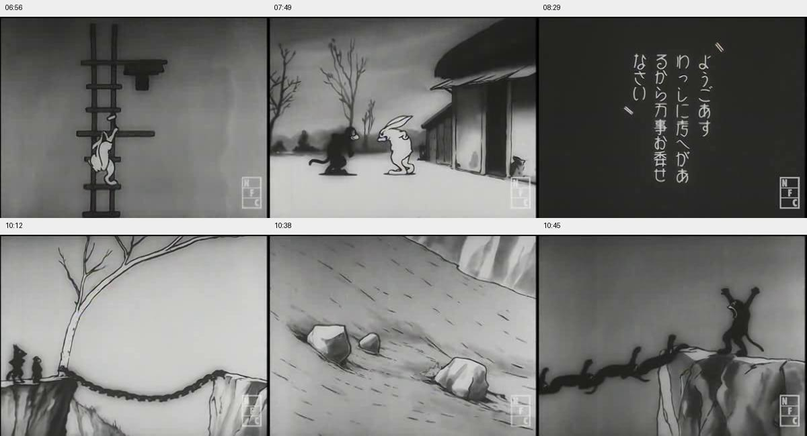
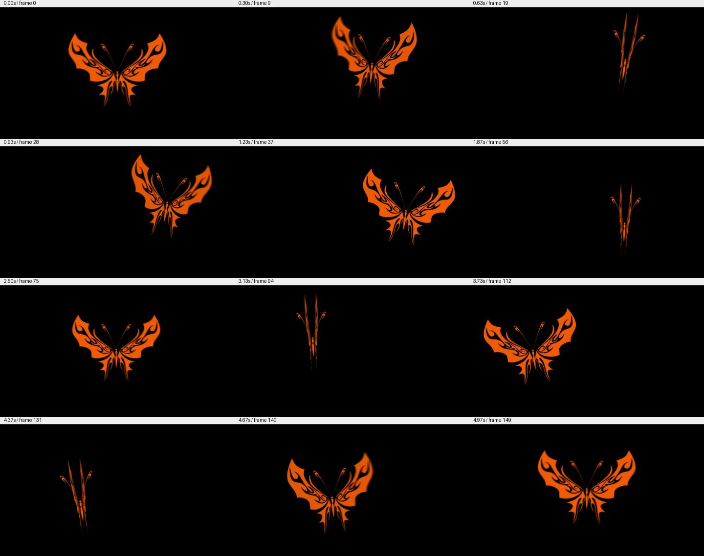

旧 Sol 完整看板 · 复现报告 · 完整性检查
API gpt-6-astra/high + Codex，两个独立会话串行，每题上限120分钟。工具环境没有外网接口或默认路由，只有受控模型代理；宿主、旧答案、真值及评分器未挂载。官方源代码固定，不按本轮成绩修改公式。
已确认：评分覆盖不足不等于作弊。 旧日志未发现搜题/读取答案证据，但旧环境缺少完整系统级隔离证明。新环境通过输入只读、宿主不可见、外网连接失败、代理禁搜题/远程图片/历史会话、超时终止等测试。训练期接触无法排除。
蝴蝶的实心矩形负对照仍得0.912812，说明评分器无法可靠区分真实振翅与轮廓伸缩；来源形状仅占10%，不检查AE使用。镜头日志空白、无关文本、仅问题对照均0分；其满分只表示十个问题可由日志回答，不代表全片逐镜头质量已认证。
旧答卷重新核分：蝴蝶0.974035；日志换成本轮API Sol/high裁判仍1.0。正式新结果如下，所有旧记录保留。
对比边界：旧实验Windows/订阅Codex0.167，本轮Linux/API Codex0.163；裁判沿用Sol/high但传输改为Responses，temperature=0未发送，原max_output_tokens=2200保留。不能把成绩差异全部归因于答题模型。原题与输入保持，路径本地化；蝴蝶脚本替代AE已获用户同意。
旧Sol 1 → 本轮Astra 1.0（0–1标度）；耗时 16.80 分钟。
下载镜头日志DOCXArchival shot log A Wolf is a Wolf (1931) | Source-print continuity report Source: Yasuji_Murata-_A_Wolf_is_a_Wolf_(1931).ogv Coverage: 00:00–11:16.22, including opening and closing cards. Times are elapsed from the first source frame, rounded to the nearest second except the file end. Adjacent shots may be grouped into continuity segments; ranges are contiguous, not frame-accurate edit points. Records describe visible action. “Text — English sense” summarizes Japanese intertitles; quoted English on the modern cards is identified separately. Dialogue claims remain attributed to the cards. The round, masked-faced animal is called the raccoon dog for continuity. 01:30–03:00 | Continuity segments 03:00–04:30 | Continuity segments 04:30–06:06 | Continuity segments 06:06–07:12 | Continuity segments 07:12–08:16 | Continuity segments 08:16–09:25 | Continuity segments 09:25–10:28 | Continuity segments 10:28–11:16.22 | Continuity segments SEGMENT START / END | VISUAL RECORD / ACTION / ON-SCREEN TEXT S01 00:00 – 00:06 | Modern identification card White Japanese and English lettering on black, followed by black leader. Text — Visible English: “A Wolf is a Wolf” and “(1931, Yasuji Murata, 11 min)”. S02 00:06 – 00:22 | Original opening cards A framed Japanese production card fades in and out. An illustrated title shows a large black wolf above smaller animal silhouettes; a short Japanese animator credit follows. The boxed NFC mark appears at lower right and remains through most of the print. Text — English sense: Japanese cards identify a production credit, the title A Wolf is a Wolf, and the animator Murata Yasuji. S03 00:22 – 00:29 | Village establishing view Thatched roofs, a fence, and a spreading tree against a pale sky. Dissolve to a road outside a white-walled house with an open window, hedge, and bare tree. S04 00:29 – 00:45 | Two animals outside the house A slender, horned goat faces a round-bellied raccoon dog with dark eye patches and a thick tail. They gesture and bow toward one another, then walk off left, the goat ahead. S05 00:45 – 01:10 | Woodland walk and transformation The pair walk left among bare trunks. The raccoon dog leaps and changes into a bald-headed, dark-robed figure. The goat falls backward with stars around its head, then gets up. The figure changes back; the two gesture at one another. A circular iris isolates the raccoon dog. S06 01:10 – 01:15 | Apology intertitle and iris return Japanese dialogue card on black, then the raccoon dog reappears in a circular iris. Text — English sense: The speaker asks to be forgiven and says he will not frighten the other again. S07 01:15 – 01:30 | Walking together again The goat approaches the raccoon dog from the right. They bow and gesture. The raccoon dog turns left and walks ahead, with the goat following through the trees. SEGMENT START / END | VISUAL RECORD / ACTION / ON-SCREEN TEXT S08 01:30 – 01:47 | Fruit tree Close view of round fruit on branches dissolves to the two animals below the trunk. The raccoon dog jumps against the tree and fruit falls around them. The goat kicks the trunk, sits down, and more fruit falls. Both collect fruit from the ground. S09 01:47 – 02:00 | Wolf in the woods A black wolf with pointed ears, long muzzle, pale eyes, and a long tail emerges from behind trunks. It walks right on all fours across the woodland floor, passing behind foreground trees. S10 02:00 – 02:06 | Eating beneath the tree The raccoon dog and goat sit on opposite sides of the trunk, bringing fruit to their mouths. Fruit, skins, and small pieces litter the ground. S11 02:06 – 02:14 | Wolf reaches a rocky edge The wolf continues right through bare woodland to a projecting rock ledge. It stops, lifts its muzzle, then leans over the edge and looks downward. S12 02:14 – 02:23 | Return to the fruit tree; flight The goat stands, drops backward, and stretches flat along the ground at the trunk. The wolf bounds in from the left. The raccoon dog jumps away to the right and runs through the trees; the wolf bends near the flattened goat, then runs after the raccoon dog. S13 02:23 – 02:37 | Pursuit and curled animal The wolf runs right behind the raccoon dog. At a group of rocks the raccoon dog curls into a ball. The wolf stands upright, raises a hind leg, and kicks the ball away to the right. S14 02:37 – 02:50 | Rolling down the slope The curled raccoon dog rolls down a sloping, rocky path, its face and tail rotating into view. It strikes a tree, with stars at the impact, then uncurls at the base. Cut back to the upright wolf gesturing beside the rocks. S15 02:50 – 03:00 | Wolf passes the fruit tree The flattened goat remains beside the trunk amid fruit debris. The wolf enters from the right, bends down by the trunk, then passes to the left and leaves. The tree view fades to black. SEGMENT START / END | VISUAL RECORD / ACTION / ON-SCREEN TEXT S16 03:00 – 03:08 | Meeting announced A vertical Japanese intertitle appears on black. Text — English sense: The card says that a village meeting was held that night to discuss measures against the violent wolf. S17 03:08 – 03:30 | Animals seated indoors A hanging lamp lights animals seated in a circle on the floor. Closer views move across a floppy-eared dog, horned goats, a pig, and the round raccoon dog; several rest their heads on their hands. The raccoon dog straightens and stands. S18 03:30 – 03:41 | Raccoon dog addresses the meeting After a dialogue card, the standing raccoon dog gestures broadly and raises both arms while the others remain seated. A second dialogue card follows. Text — English sense: First card: he has a good idea and asks the others to leave it to him. Second card: he introduces a demonstration—doing it “like this”. S19 03:41 – 03:52 | Transformation demonstration The raccoon dog changes into a tall, pale, octopus-like figure with a bulbous head and long tentacles. The goat beside it recoils onto all fours. The figure changes back to the round raccoon dog, followed by a dialogue card. Text — English sense: The card says he will frighten the wolf in this way and then show the others the wolf captured alive. S20 03:52 – 04:01 | Iris close and next-morning card A circular iris holds on the raccoon dog and closes to black. A short vertical Japanese time card fades in and out. Text — English sense: Next morning. S21 04:01 – 04:10 | Raccoon dog sets out Wearing a neck cloth, short trousers, and dark shoes, the raccoon dog marches through the bare forest. A wide view shows it continuing across open ground with distant hills. S22 04:10 – 04:30 | Wolf on high rocks; approach below The wolf sits atop a jagged rock outcrop. Cuts alternate with the raccoon dog marching beneath steep mountain walls and appearing small on an open mountainside. The wolf rises, watches, and leaps off the outcrop; it then appears among large rock slabs. SEGMENT START / END | VISUAL RECORD / ACTION / ON-SCREEN TEXT S23 04:30 – 04:45 | Encounter among rock faces The raccoon dog continues along the cliff base, stops, and turns. The wolf appears beside a tall rock, followed by a close view of its pale eyes and exposed teeth. An iris close-up shows the raccoon dog facing toward it and gesturing. S24 04:45 – 04:47 | Call to the wolf Large vertical Japanese lettering on black. Text — English sense: “Hey, wolf!” S25 04:47 – 05:00 | Successive transformations The raccoon dog changes into an upright, pale bear-shaped figure. Intercuts show the black wolf walking closer across the rocky ground. The bear-shaped figure changes back; the raccoon dog bends down and becomes the tall, tentacled figure seen at the meeting. S26 05:00 – 05:13 | Wolf and tentacled figure The wolf walks past the tentacled figure, turns back, bares its teeth, and crouches. The figure bends its head down. A brief dialogue card interrupts; the wolf then leaps toward the figure. Text — English sense: Brief card at about 05:11: “Oh no!” / “I’ve made a mistake!” S27 05:13 – 05:32 | Return toward the village The raccoon dog is again in its round form and clothing, walking with head and shoulders lowered along the rocks and through the forest. Intercut views show a group of animals waiting by a bare tree. It enters their view from the left and approaches. S28 05:32 – 05:47 | Facing the waiting group A circular close-up shows the dog and other waiting animals. Another iris isolates the raccoon dog from behind and in profile as it turns its head and gestures. In the wider view it bends low before the group; the image fades out. S29 05:47 – 06:06 | Season card and mountain landscape A Japanese intertitle dissolves into a wide mountain valley with a few buildings. Successive dissolves cover the hills and valley with snow. The snowy view fades to black. Text — English sense: Autumn has passed and winter has arrived. SEGMENT START / END | VISUAL RECORD / ACTION / ON-SCREEN TEXT S30 06:06 – 06:23 | Squirrel lookout above the courtyard A squirrel with a large bushy tail sits in a fork of a bare tree overlooking a building and an animal gathering. Rabbits hold hands and move in a circle, shown closer through a circular mask. The squirrel holds a telescope to its eye, lowers it, turns, and looks toward the mountains. S31 06:23 – 06:37 | Circular view across snowy mountains Within the telescope-like circular field, the view moves over snowy peaks, gullies, and a track. Near the end, the dark wolf appears at the lower right, moving along the snowy slope. Cut back to the squirrel looking through the telescope. S32 06:37 – 06:44 | Lookout descends and calls out The squirrel drops from the tree, lands, straightens, and opens its mouth. A Japanese warning card intervenes, then the squirrel leans forward again. Text — English sense: “The wolf has come down the mountain!” S33 06:44 – 06:48 | Animals scatter in the courtyard The rabbits break their linked circle and run, some tumbling. A wider view shows pigs, horned goats, and other animals hurrying across the open space in front of the building. S34 06:48 – 06:55 | Wolf on snowy woodland slope The black wolf walks right on all fours at the foot of a snow-covered, wooded hillside. A trail of dark footprints remains behind it. S35 06:55 – 07:01 | Squirrel climbs the house ladder Against a plain building wall, the bushy-tailed squirrel climbs a fixed vertical wooden ladder using its forepaws and feet. It reaches a projecting rung/platform beneath a small suspended alarm fixture and repeatedly reaches upward to operate it. S36 07:01 – 07:12 | Warning spreads among houses Two round animals hurry past thatched houses, raising their arms toward windows and doors; goats and other animals join the movement along the street. A brief return shot shows the squirrel still at the top of the wall-mounted ladder, working the alarm fixture. SEGMENT START / END | VISUAL RECORD / ACTION / ON-SCREEN TEXT S37 07:12 – 07:20 | Interior scramble and doorway Inside a house, a pig jumps beside a square recessed hearth in a raised floor. A large smoke-like cloud billows up; the pig tumbles off the platform, gets up, and runs outside. In a separate dark lane, a small dark, pointed-eared animal runs into a doorway. S38 07:20 – 07:30 | Houses and a barrel A rabbit and a pig hurry along house fronts and turn toward entrances. The pig moves into a narrow lane, approaches an open barrel beside leaning boards, and jumps into it, leaving its upper body above the rim. S39 07:30 – 07:35 | Wolf continues through the woods The wolf walks right between bare trunks across pale ground, its long muzzle forward and tail trailing. S40 07:35 – 07:41 | Barrel overturned The pig remains in the barrel. Three smaller pigs approach; the barrel tips over. The large pig gets out beside it with dark liquid coating its head and upper body. S41 07:41 – 07:52 | Rabbit and dark monkey silhouette A rabbit runs across open ground and stops beside a house. At about 07:47 a black, shadow-like silhouette of a long-tailed monkey drops into view beside it and tumbles low. The monkey rises, faces the rabbit, and gestures; pale facial details show against its dark body. S42 07:52 – 08:03 | Monkey and rabbit travel together The monkey moves left with the rabbit immediately behind it across a bare landscape. After a brief view of villagers disappearing into a house, the pair continue along the village street. S43 08:03 – 08:16 | At a closed house door The rabbit and monkey stop at a plank door beneath a thatched roof. The rabbit knocks or pushes at the door. A horned goat opens it; the rabbit enters, followed by the monkey, and the door closes. SEGMENT START / END | VISUAL RECORD / ACTION / ON-SCREEN TEXT S44 08:16 – 08:26 | Conversation inside the house The goat sits on the edge of a raised room while the rabbit and dark monkey stand below. Sliding panels with landscape designs, a round hanging object, hanging strips, and stacked boards are visible. An iris close-up isolates the monkey, which folds its arms and then puts its hands at its waist. S45 08:26 – 08:32 | Monkey’s dialogue card Vertical Japanese dialogue on black, followed by the monkey in the circular close-up. Text — English sense: The speaker says he has an idea and asks that everything be left to him. S46 08:32 – 08:44 | Monkey leaves the house The goat gets up; all three gesture. Outside, the monkey comes through the doorway first. The goat and rabbit follow to the threshold and wave as the monkey gestures back, then walks right. Fade to black and into rocks. S47 08:44 – 08:54 | Monkeys at the cliff base A dark monkey enters among angular boulders below a steep rock face and climbs onto a stone. Another approaches from the right. They look and gesture upward; additional dark figures are visible among the rocks. S48 08:54 – 09:07 | Wolf above the chasm The wolf reaches a high projecting cliff beside a bare tree and looks across. A reverse wide view shows several small pale animals, including horned goats, on the opposite rocky rim. Back at the wolf, the view tilts down the sheer cliff to a monkey below. S49 09:07 – 09:15 | Monkey climbs to the wolf The monkey bounds upward over rocks, with another monkey below. It reaches the lip beside the tree where the wolf waits. In a circular close-up it grips the edge with one hand and lifts the other in greeting. S50 09:15 – 09:25 | Greeting and wolf’s response A greeting card is followed by an iris close-up of the wolf leaning forward with its teeth showing. A second dialogue card appears; the monkey is then shown hanging at the edge and raising one hand. Text — English sense: First card: “Hello, General Wolf!” Second card: the wolf remarks that a monkey has arrived at a convenient moment and orders it not to move. SEGMENT START / END | VISUAL RECORD / ACTION / ON-SCREEN TEXT S51 09:25 – 09:42 | Offer to take the wolf across A longer Japanese dialogue card is followed by close-ups of the monkey and wolf, then a short reply card. Text — English sense: The monkey’s card calls him the wolf’s subject and says the monkeys have come to take the wolf across to where the goats are. The reply tells him to lead the way immediately. S52 09:42 – 09:55 | Monkeys summoned upward The wolf stands upright beside the tree. The monkey pulls itself onto the ledge and signals downward and upward with its arms. Many monkeys gather among the boulders below, climb the cliff, reach the ledge, and begin ascending the tree while the wolf watches. S53 09:55 – 10:05 | Linked monkeys up cliff and tree Alternating views show monkeys stretched in a line up the rock face and clustered along the tree trunk. Circular close views show successive monkeys climbing past and joining the others, their bodies linked end to end. S54 10:05 – 10:13 | Living bridge lowered across the gap Wide view: two sheer rock cliffs are separated by a deep, open ravine. A long chain of linked monkeys extends along a branch on the left. Its free end swings down and reaches the right cliff; the left end lowers along the tree. The joined bodies hang in a shallow curve across the gap, forming a living bridge. S55 10:13 – 10:20 | Monkey steps onto the living bridge With the wolf still beside the tree on the left ledge, the single monkey gestures, steps onto the linked bodies, and walks right across them. Mid-span it stops, bends down, and addresses a monkey in the chain. S56 10:20 – 10:22 | Instruction on the bridge Short vertical Japanese dialogue card on black. Text — English sense: The speaker urges the others to hold firm / says he is counting on them. S57 10:22 – 10:28 | Monkey completes the crossing The monkey straightens and continues right along the chain. It steps onto the far rock ledge, turns back toward the wolf, and extends an arm in a beckoning gesture. The linked monkeys remain stretched between the cliffs. SEGMENT START / END | VISUAL RECORD / ACTION / ON-SCREEN TEXT S58 10:28 – 10:32 | Wolf follows onto the bridge Cut to the wolf still at the tree-side cliff. It rises on its hind legs, approaches the edge, and steps from the rock onto the chain of monkeys, proceeding right in the direction the monkey has just taken. S59 10:32 – 10:42 | Wolf over the ravine The wolf walks upright along the linked bodies, then bends and crouches on them. A downward-looking insert shows a rocky slope and boulders far below. Back on the bridge, pale concentric circles surround the hunched wolf as it looks down and clings close to the chain. S60 10:42 – 10:45 | Signal from the far ledge The monkey on the right cliff gestures toward the bridge, crouches, and then raises both arms overhead. The monkey anchoring that end remains at the edge; monkeys along the chain begin raising their limbs. S61 10:45 – 10:48 | Chain parts; wolf falls Back at mid-span, the linked bodies separate beneath the wolf. In the wide ravine view, the two ends swing down beside the cliffs while the wolf drops through the open center, limbs spread. It falls out of the lower frame; a pale burst rises from below. The wolf is not shown returning to either ledge. S62 10:48 – 10:53 | Animals at the rim A row of rabbits, horned goats, and round-faced animals peers over a rocky edge, then raises forelegs and bobs up and down. The view fades to black. S63 10:53 – 11:02 | Closing narrative card Vertical Japanese intertitle fades in and out on black. Text — English sense: The card says that happy days returned once more to the village at the foot of the mountain. S64 11:02 – 11:16.22 | End title, black, and modern closing credit The original Japanese title and an end character appear, followed by black from about 11:06 to 11:10. A modern bilingual credit fades in and remains to the end of the file. Text — English sense: Original card: A Wolf is a Wolf / End. The English closing credit identifies the National Project for the Sustainability of Born-Digital Cinema, support by Japan’s Agency for Cultural Affairs in fiscal 2016, January 2017, and the National Film Center, The Museum of Modern Art, Tokyo.
| 问题 | 回答 | 正确 | 裁判证据 |
|---|---|---|---|
| Q1 | B | True | a village meeting was held that night to discuss measures against the violent wolf |
| Q2 | A | True | The speaker says he has an idea and asks that everything be left to him. |
| Q3 | C | True | the bushy-tailed squirrel climbs a fixed vertical wooden ladder |
| Q4 | B | True | a black, shadow-like silhouette of a long-tailed monkey drops into view |
| Q5 | A | True | The black wolf walks right on all fours at the foot of a snow-covered, wooded hillside. |
| Q6 | C | True | two sheer rock cliffs are separated by a deep, open ravine |
| Q7 | C | True | The joined bodies hang in a shallow curve across the gap, forming a living bridge. |
| Q8 | C | True | With the wolf still beside the tree on the left ledge, the single monkey gestures, steps onto the linked bodies, and walks right across them. |
| Q9 | B | True | steps from the rock onto the chain of monkeys, proceeding right in the direction the monkey has just taken |
| Q10 | D | True | the wolf drops through the open center, limbs spread |
原默认 GPT-5.4 复核未成功；不补分。错误记录
独立解析冻结DOCX并抽查原片6帧；不是全片逐帧人工标注，也未做Word页面渲染验收。以下检查不改变官方分数。

旧Sol 0.974035 → 本轮Astra 1.0（0–1标度）；耗时 5.33 分钟。
本轮 Astra 成片：
旧 Sol 成片：
未满足 AE 软件执行要求：按用户授权仅复现视频评分。主任务文字允许 AE 不可用时替代制作，附件仍要求 AE；这里单独披露未用 AE，不额外改动官方分数。
{
"probe": {
"exists": true,
"readable": true,
"codec_name": "h264",
"container_ext": ".mp4",
"width": 1920,
"height": 1080,
"fps": 30.0,
"frame_count": 150,
"duration_sec": 5.0
},
"metrics": {
"detection_ratio": 1.0,
"width_amplitude_ratio": 0.8479638009049772,
"estimated_flap_cycles": 4.0,
"y_turning_points": 4,
"y_range_ratio": 0.20446759259259253,
"max_jump_ratio": 0.011976109211270482,
"source_shape_iou": 0.6393310954564562
},
"components": {
"timing": 1.0,
"detection": 1.0,
"wing_flap": 1.0,
"path": 1.0,
"source_shape": 1.0
},
"passed": true
}独立解码150帧、抽查12帧并检查制作脚本；不是盲评美学评分，不改变官方计分。

实心矩形动画（并非蝴蝶）：
{
"static": 0.36281,
"moving_rectangle": 0.55,
"pulsing_rectangle": 0.91281,
"pulsing_rectangle_1080p": 0.912812
}